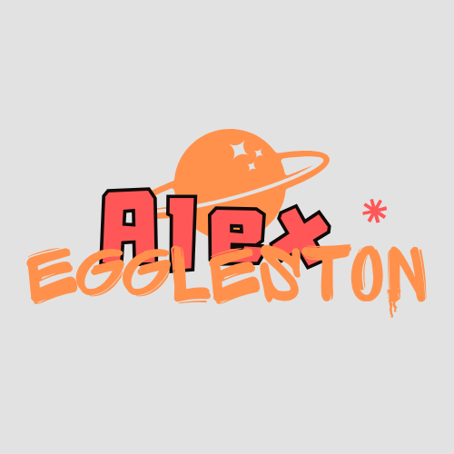
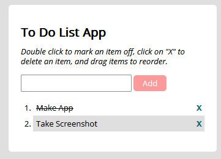
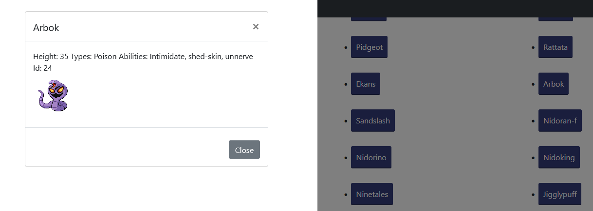
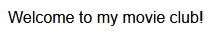
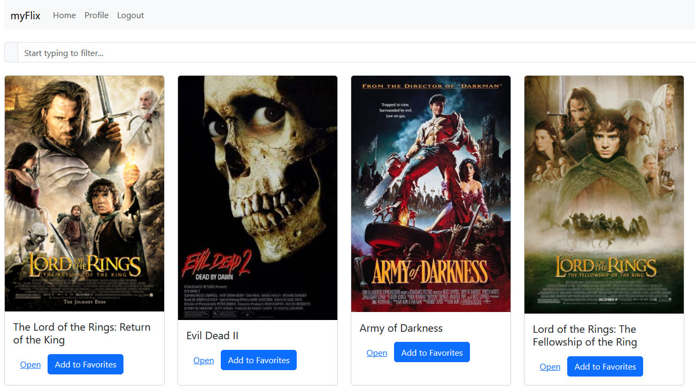
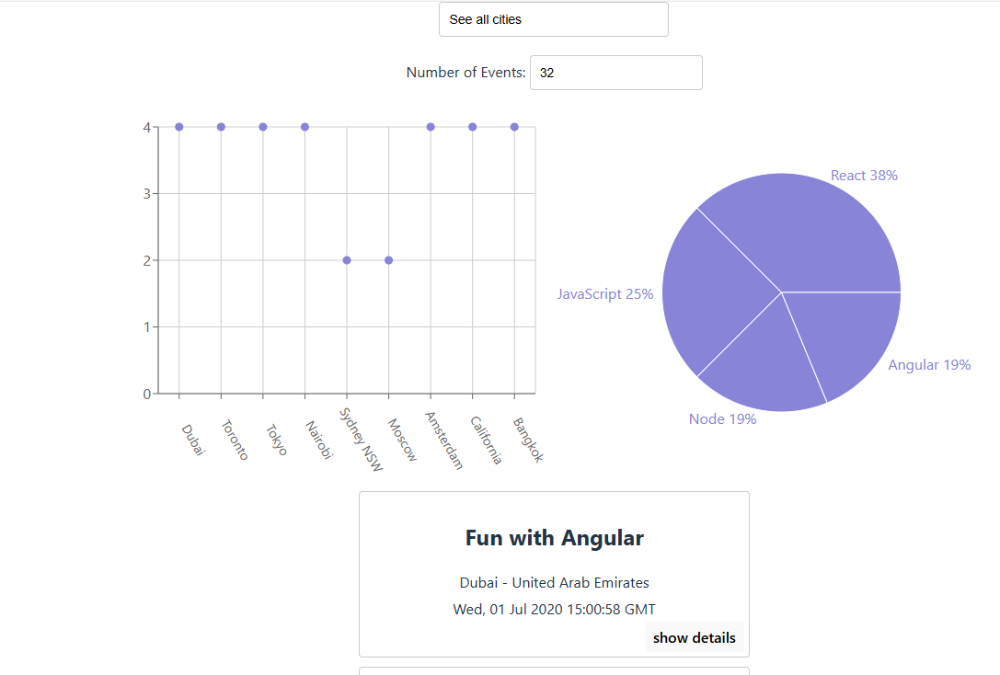
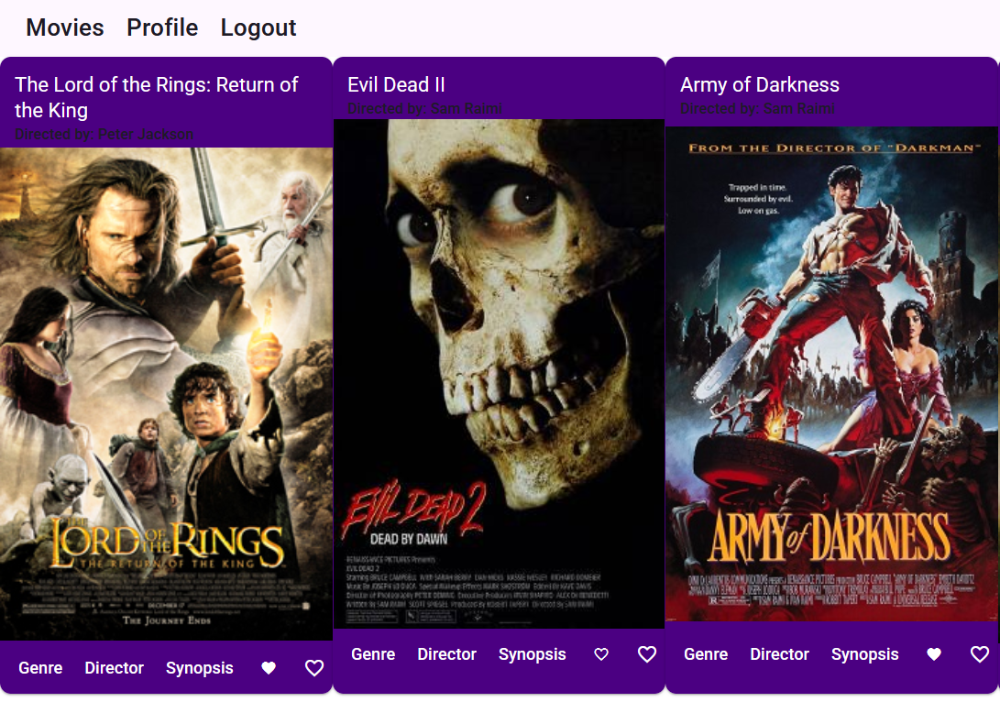

Simple To-Do list project to introduce myself to jQuery, it was the second thing I did after creating the first draft of this website!
Technologies: jQuery, ES6, HTML, CSS

See project on GitHub
This is a small app that taught me how to use a public API, it's a list of the 150 original Pokemon as well as their important attributes!
Technologies: ES6, Promise and Fetch polyfills, Minifier, HTML, CSS, pokeapi.co

See project on GitHub
My first ever API, introduced me to server-side development as well as creating databases. It was so different from front-end development! This contains a list of about ten movies with information about their genres and directors.
Technologies: Node.js, ES6, Passport, bcrypt, BodyParser, CORS, Express, JsonWebToken, Mongoose

See project on GitHub
My own client to interact with my own API, this one is all me. This project introduced me to React's routing, hosting through other web services, as well as React's components sructuing, the myFlix client gave me the works.
Technologies: Bootstrap, React, React Bootstrap, React DOM, React Router DOM, Yarn, Parcel, SASS

See project on GitHub See project hosted on Netlify
This app uses Google's Google Calendar API to connect to a CareerFoundry calendar and present coding events all across the world, with charts to display number and types of events. It should even be able to be installed to your device similar to a native app!
Technologies: Vite, React, React DOM, Recharts, Workbox, Babel, Jest, Puppeteer, Eslint

See project on GitHub See project hosted on Github Pages
This is a remake of the myFlix client project, using Angular instead of React. This was also my first introduction into typescript.
Technologies: Angular, Typescript, Typedoc, Angular Materials

See project on GitHub